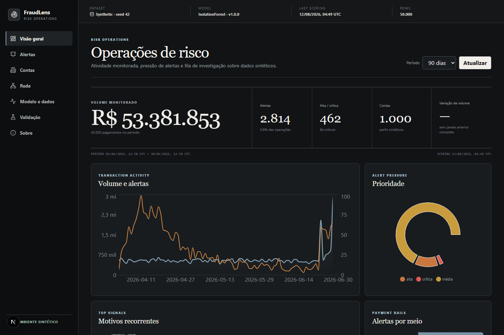
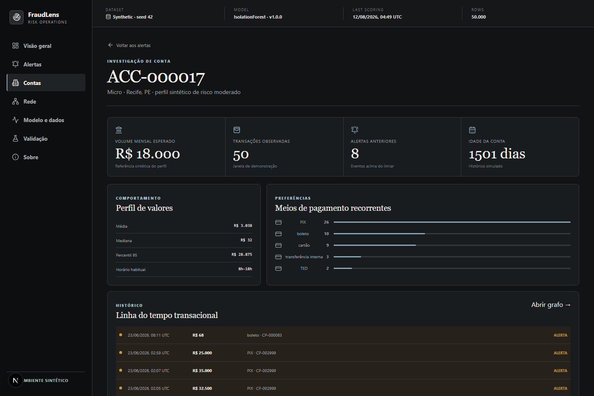
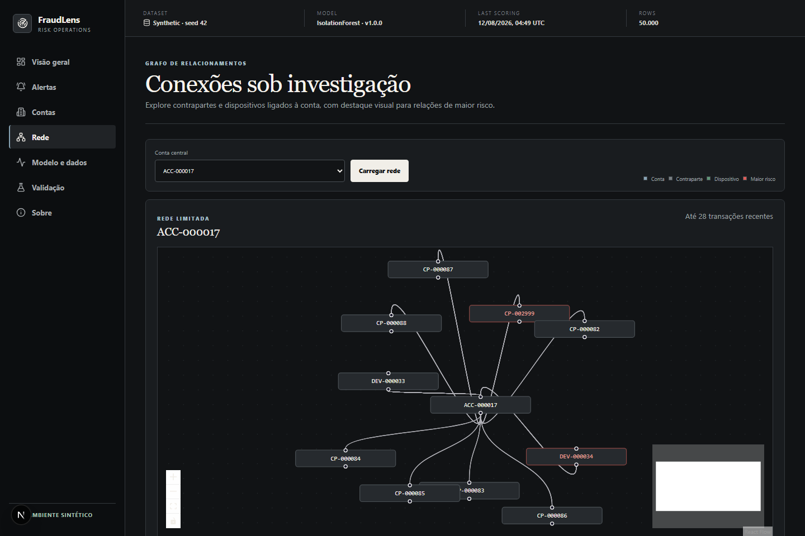

FraudLens
Intelligent Payment Anomaly Radar
Do pagamento ao sinal.
Do sinal à explicação.

Um score sozinho
não explica uma anomalia.
Volume sem contexto vira ruído. Contexto sem prioridade vira fila.
O desafio não é apenas detectar.
É explicar o que merece atenção.
Do dado bruto à
prioridade de investigação.
O modelo encontra isolamento. As regras preservam sinais legíveis.
Contexto antes
da conclusão.
O analista atravessa o alerta, o histórico e a rede — sem perder a trilha do sinal.


O que aconteceu?
02Por que foi sinalizado?
03O que mudou?
04Qual era o comportamento normal?
05Quais eventos vieram antes?
Uma solução.
O fluxo inteiro.
Arquitetura pragmática para demonstrar dados, ML, software e operação.
Resultados reais.
Contexto explícito.
Uma execução reproduzível sobre cenários controlados.
Resultados obtidos em dados e cenários 100% sintéticos.
Não representam desempenho em produção.